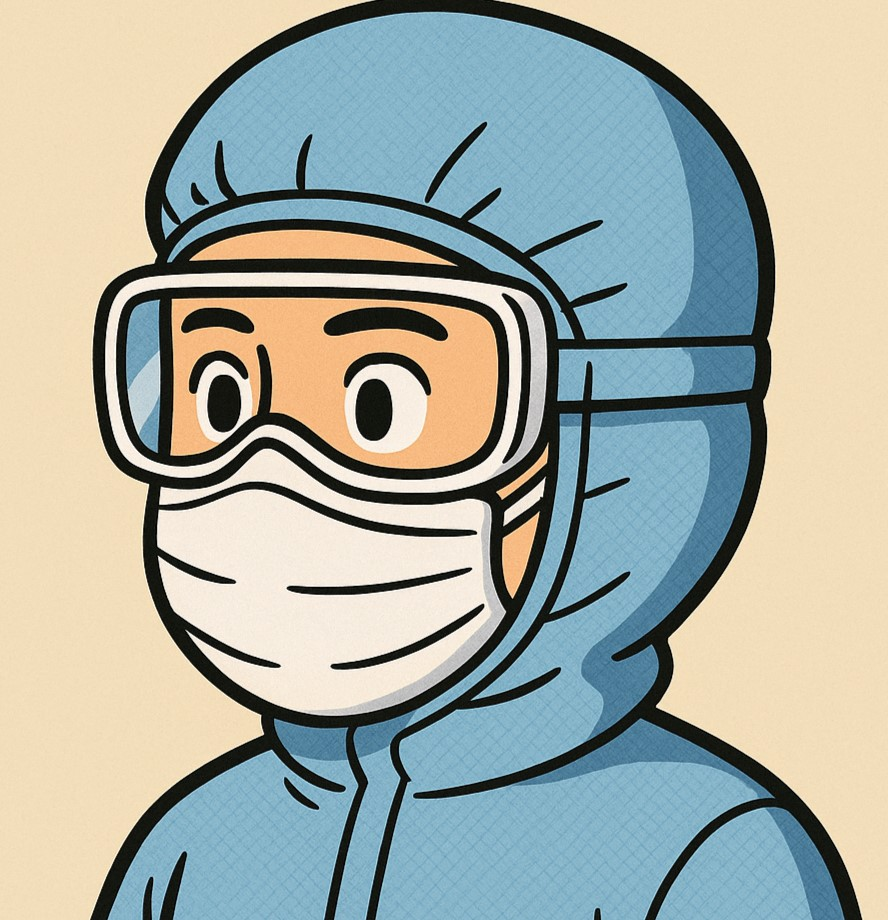

CIP/SIP • Filtrasyon • Bütünlük Testleri
Solüsyon Hazırlama Operatörü
GMP odağında izlenebilir, güvenli ve standartlara uyumlu hazırlık. Aseptik süreçlerde MBR ve log kayıtlarıyla kesintisiz akış.
İletişime geç

Hakkımda
1.5+ yıl steril üretimde solüsyon hazırlama tecrübesi. 0.2 µm filtrasyon, diferansiyel basınç izleme ve filtre bütünlük testleri (Sartocheck 5 Plus). Kayıtların eksiksiz tutulması, sapmaların zamanında bildirilmesi, güvenli ve düzenli hazırlık.
PW/WFI
Temiz Oda
GDP/GMP
Excel/Sheets
Deneyim
Solüsyon Hazırlama Operatörü
Türkiye’de yerleşik bir ilaç üreticisi · 2024–güncel
- SIP sonrası filtre bütünlük testleri; uygunsuzlukta tekrar test ve kayıt.
- 0.2 µm filtrasyonda diferansiyel basınç takibi ve MBR girişi.
- CIP/SIP döngülerinde sapma ve arıza kayıtlarının tutulması.
Operasyon Destek
(Varsa önceki rol) · yıl–yıl
- Hammadde–ambalaj kabul ve lot takibi.
- Hijyen ve temiz oda kuralları uygulaması.
Yetkinlikler
CIP/SIP
Filtrasyon (0.2 µm)
Filtre Bütünlük Testleri
Temiz Oda Davranışı
MBR/Log Kayıt
Araçlar
- Sartocheck 5 Plus — BP/Diffusion
- pH/İletkenlik Ölçer — Kalibrasyon takibi
- PW/WFI Hatları — Numune ve kayıt
- Excel/Sheets — Log ve DP takibi
Projeler / Notlar
CIP Başlatma Kartı (A6)
Kısa kontrol listesi: ön kontrol, kimyasal, sıcaklık, hat izolasyonu.
PDF (yakında)Sertifikalar
- GMP Farkındalık (yyyy)
- Hijyen Eğitimi (yyyy)
- İSG Temel Eğitimi (yyyy)